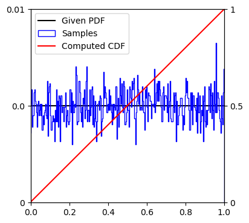

[1]:
import numpy as np
import matplotlib.pyplot as plt
[2]:
class sampler:
def __init__(self, unnormalized_pdf, resolution, seed=None):
# set the seen for random sampling
try:
np.random.seed(seed)
except:
pass
# set the resolution of the discritized pdf/cdf using the resolution of the sample space
self.resolution = resolution
# normalize the pdf
self.pdf = unnormalized_pdf(resolution)
self.pdf = self.pdf / np.sum(self.pdf)
# find the cdf from the user provided pdf
self.cdf = []
self._cdf_from_pdf()
def _cdf_from_pdf(self):
"""Create CDF from PDF."""
self.cdf = np.array([np.sum(self.pdf[:i + 1]) for i in range(self.resolution)])
def draw_samples(self, number_samples):
"""Draw samples from the PDF by inverting the CDF."""
sample_list = []
samples_cdf = np.random.rand(number_samples)
for cdf_item in samples_cdf:
temp = self.cdf - cdf_item
sample_list.append(np.where(temp >= 0)[0][0])
return np.reshape(np.array(sample_list), [-1])
def plot_cdf_and_samples(self, sample_list):
"""Plot the samples, PDF, and CDF."""
fig, laxis = plt.subplots()
fig.set_size_inches(4, 4)
laxis.plot(np.linspace(0, 1, self.resolution), self.pdf, color = 'black', label = r"Given PDF")
laxis.hist(np.linspace(0, 1, self.resolution)[sample_list],
np.linspace(0 - 1 / (2 * (self.resolution - 1)), 1 + 1 / (2 * (self.resolution - 1)), self.resolution + 1),
histtype = 'step',
weights = np.ones(len(sample_list)) / len(sample_list),
color = 'blue',
label = r"Samples")
plt.ylim([0, np.max(self.pdf) * 2])
laxis.set_yticks([0, np.max(self.pdf), np.max(self.pdf) * 2])
laxis.set_yticklabels([0, np.round(np.max(self.pdf), 2), np.round(2 * np.max(self.pdf), 2)])
lhandles, llabels = laxis.get_legend_handles_labels()
raxis = laxis.twinx()
raxis.plot(np.linspace(0, 1, self.resolution), self.cdf, color = 'red', label = r"Computed CDF")
plt.xlim([0, 1])
plt.ylim([0, 1])
raxis.set_yticks([0, 0.5, 1])
raxis.set_yticklabels([0, np.round(0.5, 1), np.round(1, 1)])
rhandles, rlabels = raxis.get_legend_handles_labels()
laxis.legend(handles = lhandles + rhandles, labels = llabels + rlabels, loc = "upper left")
laxis.set_position([0.1, 0.1, 0.8, 0.8])
plt.show()
[3]:
def unnormalized_pdf(resolution):
"""Define your distribution. Take the resolution as an argument."""
return np.array([1 for x in np.linspace(0, 1, resolution)])
[10]:
resolution = 300
number_samples = 10000
data = []
r = sampler(unnormalized_pdf, resolution, i)
data.append(r.draw_samples(number_samples))
r.plot_cdf_and_samples(data[-1])
